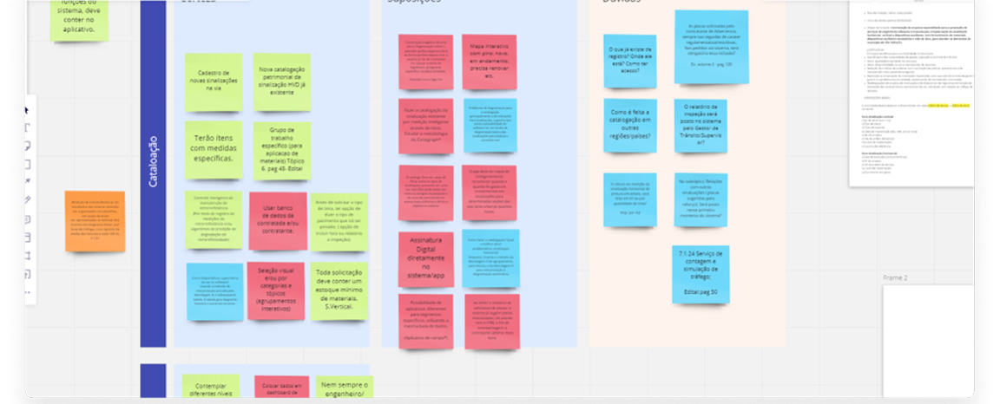
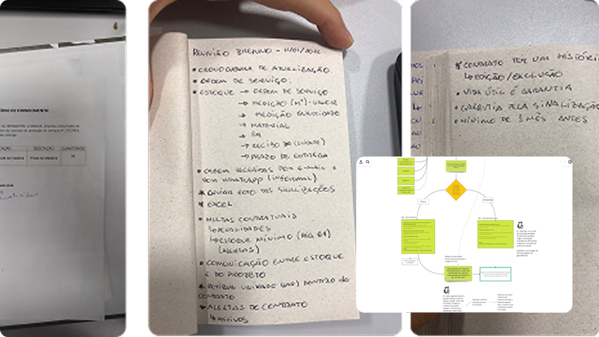
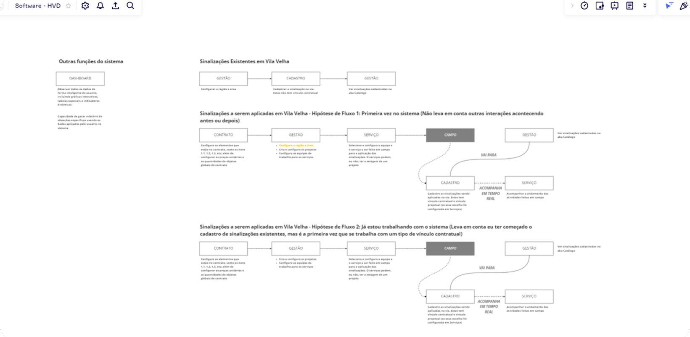
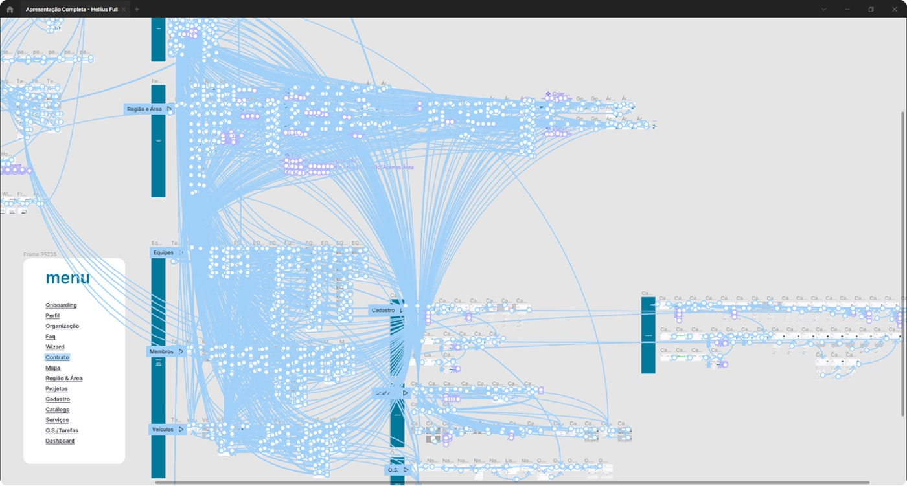
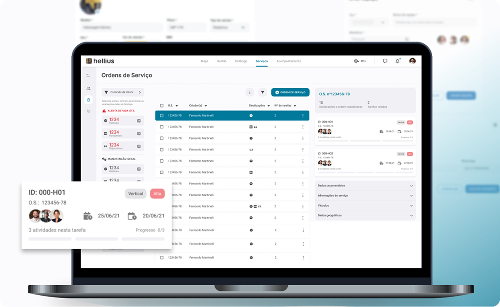
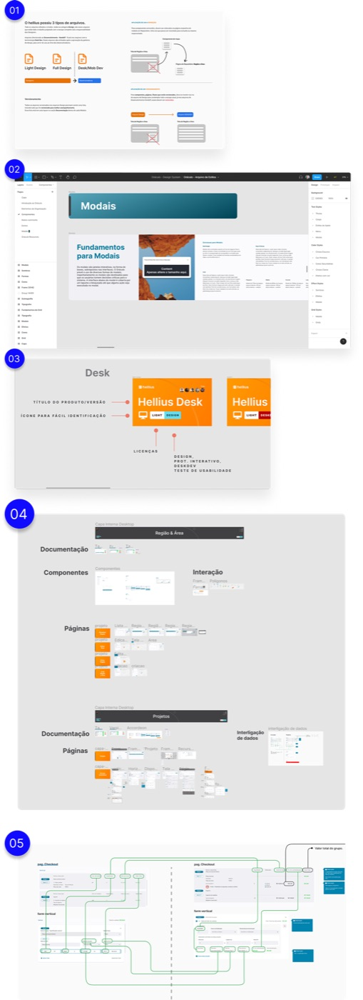

Case studyCase
Intelligent Road Sign Management Gestão Inteligente de Sinalização Viária
Hellius is an intelligent road sign management platform for desktop and mobile, designed to control signage quality, quantity, and investment planning through an integrated design system. Facing challenges related to road safety and inefficient public-sector management, the project began with extensive research, document analysis, and collaborative workshops. Hellius é uma plataforma inteligente de gestão de sinalização viária para desktop e mobile, projetada para controlar qualidade, quantidade e planejamento de investimento em sinalização por meio de um design system integrado. Diante de desafios relacionados à segurança viária e à gestão pouco eficiente do setor público, o projeto começou com pesquisa extensiva, análise documental e workshops colaborativos.
Discovery activities included the creation of an organizational chart, a CSD matrix, and content flow mapping to align business and user needs. Based on these insights, a scalable and user-centered solution was developed to optimize roadway infrastructure management and decision-making. By leveraging interactive prototyping, we reduced product approval time by 40% and ensured feature validation in record time, accelerating stakeholder alignment and minimizing rework. As atividades de discovery incluíram a criação de um organograma, uma matriz CSD e o mapeamento de fluxos de conteúdo para alinhar necessidades de negócio e de usuário. A partir desses insights, foi desenvolvida uma solução escalável e centrada no usuário para otimizar a gestão da infraestrutura viária e a tomada de decisão. Com prototipagem interativa, reduzimos em 40% o tempo de aprovação do produto e garantimos a validação de funcionalidades em tempo recorde, acelerando o alinhamento com stakeholders e minimizando retrabalho.
As Team Lead, I had a great opportunity to combine my knowledge and learning with our UX design group. Como Team Lead, tive a grande oportunidade de unir meu conhecimento e aprendizado com o nosso grupo de UX design.
Process & screensProcesso e telas






